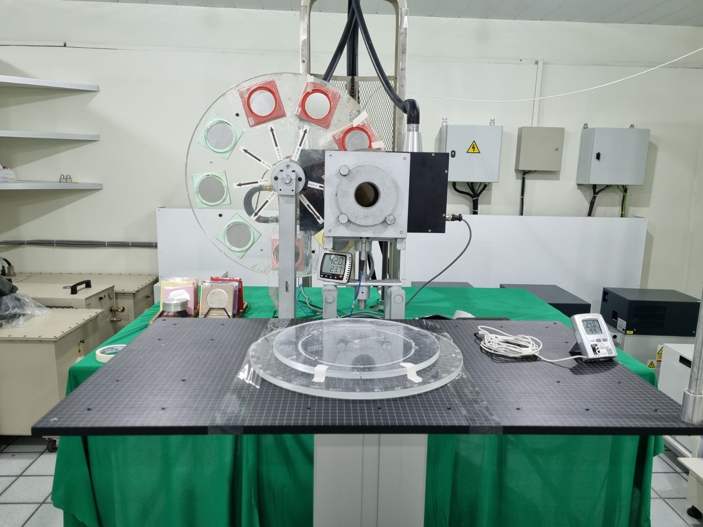
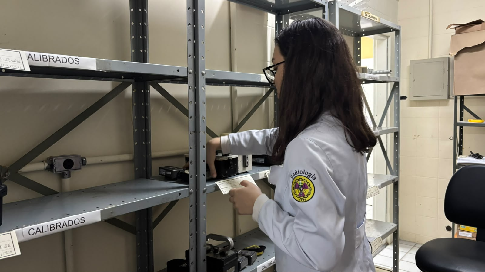
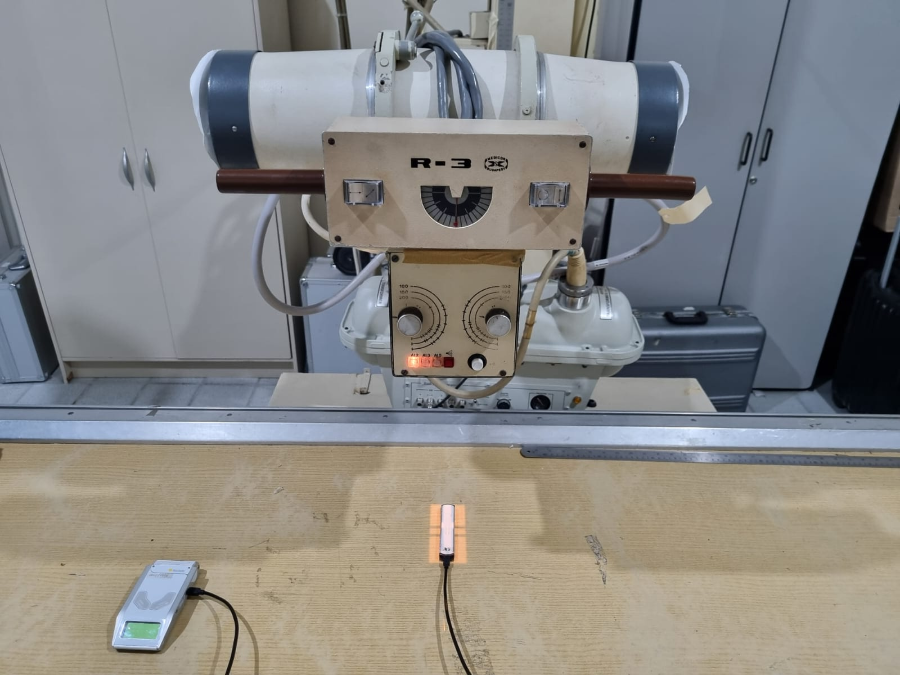
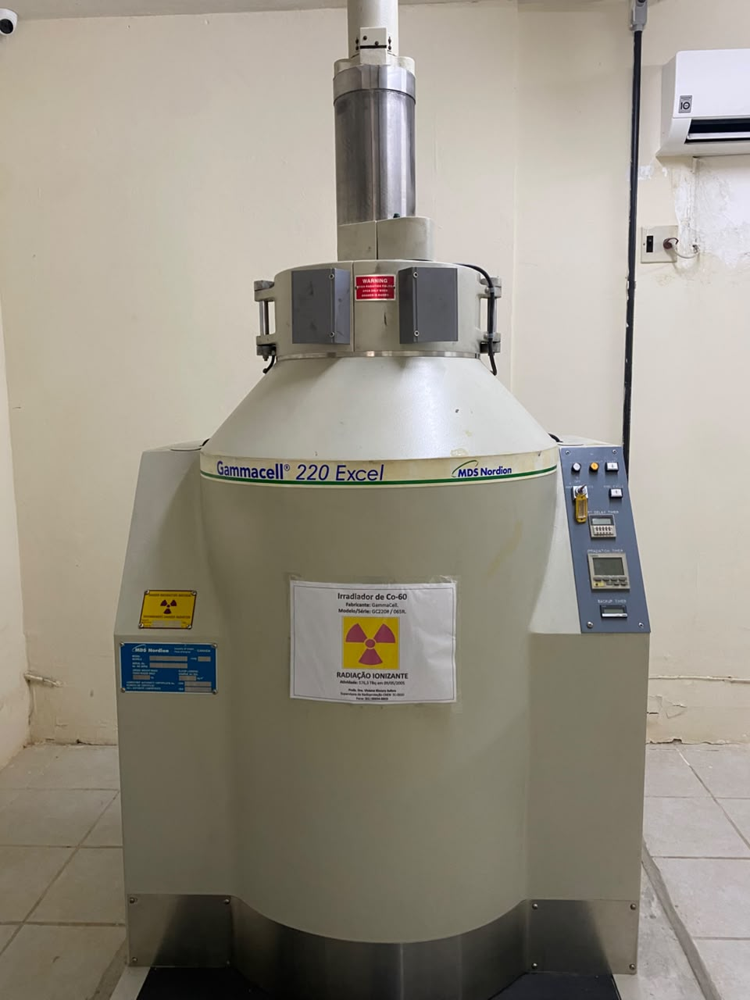
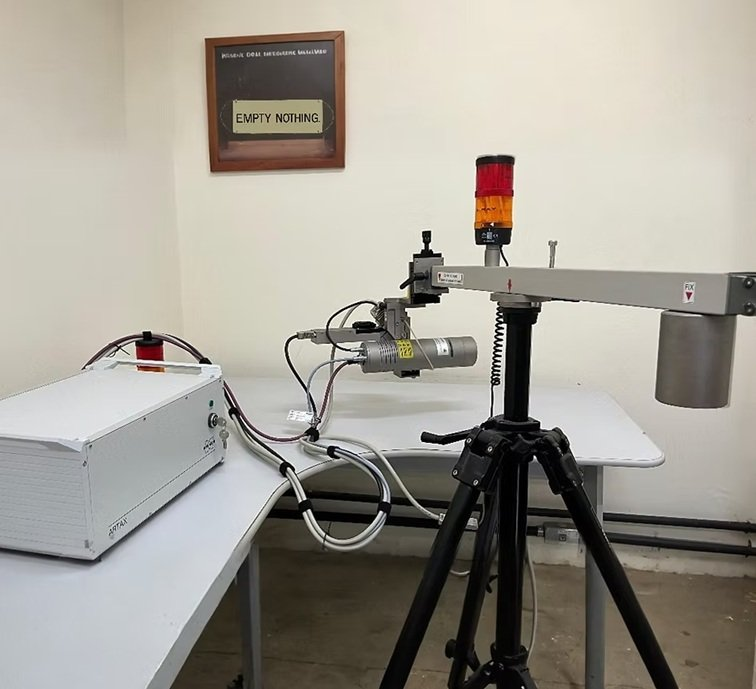
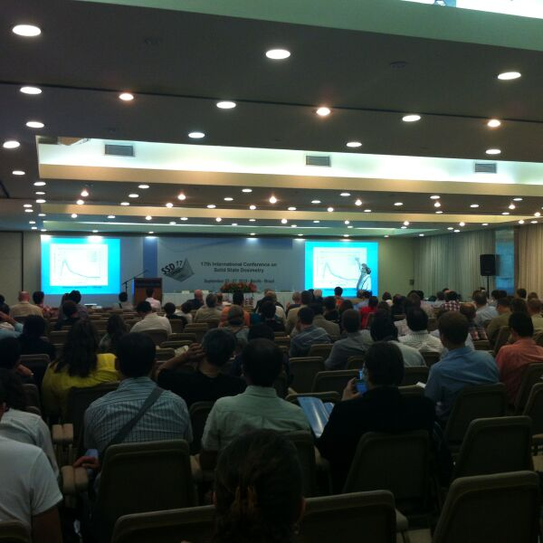
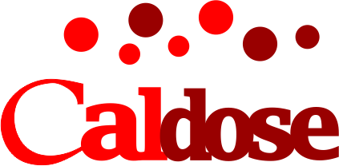

LMRI
Calibração
Monitores de radiação, canetas dosimétricas, alarmes pessoais, câmaras de ionização e medidores não invasivos.
Início / Extensão
Indústrias, hospitais e clínicas de todo o país, em especial do Norte e do Nordeste, contam com os laboratórios do GDOIN para calibrar instrumentos, proteger trabalhadores e pacientes e formar equipes.

Não sabe por onde começar? Ligue para (81) 2126-8708.

LMRI
Monitores de radiação, canetas dosimétricas, alarmes pessoais, câmaras de ionização e medidores não invasivos.

LPR
Levantamento radiométrico, controle de qualidade, teste de esfregaço, planos de proteção e blindagem.

GAMALAB
Coloração de gemas, mutações genéticas, esterilização de materiais e controle de vetores com a Biofábrica Moscamed.

LDRD
Arqueometria, geologia e patrimônio cultural, com TL, OSL, EPR, XRF e espectrometria gama.

Cursos de proteção radiológica para medidores nucleares e gamagrafia, para quem vai fazer as provas de supervisor de proteção radiológica da CNEN; cursos curtos para técnicos de empresas que usam radiação; e cursos para profissionais da Vigilância Sanitária.

CALDOSE-X